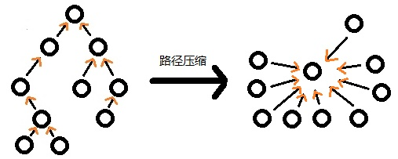

L2-010 排座位
题目描述
时间限制: 150 ms
内存限制: 64 MB
代码长度限制: 16 KB
布置宴席最微妙的事情，就是给前来参宴的各位宾客安排座位。无论如何，总不能把两个死对头排到同一张宴会桌旁！这个艰巨任务现在就交给你，对任何一对客人，请编写程序告诉主人他们是否能被安排同席。
输入格式：
输入第一行给出3个正整数：N（$\le 100$），即前来参宴的宾客总人数，则这些人从1到N编号；M为已知两两宾客之间的关系数；K为查询的条数。随后M行，每行给出一对宾客之间的关系，格式为：宾客1 宾客2 关系，其中关系为1表示是朋友，-1表示是死对头。注意两个人不可能既是朋友又是敌人。最后K行，每行给出一对需要查询的宾客编号。
这里假设朋友的朋友也是朋友。但敌人的敌人并不一定就是朋友，朋友的敌人也不一定是敌人。只有单纯直接的敌对关系才是绝对不能同席的。
输出格式：
对每个查询输出一行结果：如果两位宾客之间是朋友，且没有敌对关系，则输出No problem；如果他们之间并不是朋友，但也不敌对，则输出OK；如果他们之间有敌对，然而也有共同的朋友，则输出OK but...；如果他们之间只有敌对关系，则输出No way。
输入样例：
7 8 4
5 6 1
2 7 -1
1 3 1
3 4 1
6 7 -1
1 2 1
1 4 1
2 3 -1
3 4
5 7
2 3
7 2
输出样例：
No problem
OK
OK but...
No way
来源
团体程序设计天梯赛-练习集_L2-010. 排座位
作者: 陈越
单位: 浙江大学
题目分析
这道题是道关于集合和简单无向图的题。
朋友的朋友也是朋友，那朋友的朋友的朋友也是朋友，类推下去，可以发现这就是一个朋友的集合，那可以用集合来记录朋友，在c++中可以用STL中的set来，或者可以用并查集来处理。下面将使用并查集来解决此题。
敌人没有扩张性，是敌人就是敌人，不是敌人就不是，因为数据量不大，这种可以用简单的无向图来处理，判断两个节点之间有没有边就行了。
然后来讲下并查集。
其实我们之前也有接触过类似并查集的东西，就是计算最短路径的Dijkstra里判断节点有无被计算过，用的就是数组标识，并查集和那个数组有异曲同工之妙，不过思维角度不一样。
并查集，并是合并的意思、查是查找的意思、集是集合的意思。顾名思义，就是可以一种表示集合的方式，支持合并和查找操作的一种数据结构。
并查集是一种树型的数据结构，用于处理一些不相交集合（Disjoint Sets）的合并及查询问题。常常在使用中以森林来表示。——来自百科
并查集一般用于查询无向图中两个节点是否联通。
并查集属于树的一种，但树怎么表示集合呢，怎么进行查找呢。
我们都知道，在森林里，若两个节点都有一个共同的父节点，那么这两个节点就属于同一棵树。
并查集就是运用了这点常识。一个最简单的并查集表示一个森林，里面所有的节点都只指向父节点。查询两个元素是否属于同一集合的时候只要找两个两个元素是否是同个父节点就行。合并两个集合的时候只需要将其中一个集合的父节点指向另一个集合的任意节点就行。

并查集的表示：由于每个节点都只记录其直接前驱，所以可以直接用数组表示并查集。 数组每个元素都代表一个节点。储存当前节点的父节点下标就行。若要查询a和b两个元素是否属于同个集合，那只用从a节点向上追溯，b元素也向上追溯，看最后是否是相同就行了。
之后是并查集的优化。我们可以看到，并查集中所有的元素都只用追溯到树的根节点就行了，中间的层与结果无关，所以一个最主要的优化就是：路径压缩，将子节点直接指向父节点就行了。还有其他优化的什么将小点的树接到大的树上面之类的都无伤大雅了。 
说了这么多其实代码就几行：
// int bcj[]；
// 初始化时我习惯将所有都初始化成-1
// 可以稍作修改用负数来记录当前集合的大小什么的
// 查找某个元素的根节点
int find(int p) {
// 该节点为根节点？返回根下标：让该节点指向根节点；
return bcj[p] < 0? p: bcj[p] = find(bcj[p]);
}
// 合并两个元素所在的集合
void join(int a, int b) {
a = find(a); b = find(b);
// 若不在一个集合内则合并
if (a != b) bcj[b] = a;
}
参考答案
使用并查集：
#include <iostream>
using namespace std;
int n, bcj[101], dr[101][101];
int find(int p) {
return bcj[p] < 0? p: bcj[p] = find(bcj[p]);
}
void join(int a, int b) {
a = find(a); b = find(b);
if (a != b) bcj[b] = a;
}
int main() {
// freopen("L2-010. 排座位in.txt","r",stdin);
for(int i=0; i < 101; ++i) bcj[i] = -1;
int m, k; cin >> n >> m >> k;
while (m--) {
int a, b, gx; cin >> a >> b >> gx;
if(gx == 1) join(a, b);
else dr[a][b] = dr[b][a] = 1;
}
while (k--) {
int a, b; cin >> a >> b;
if (find(a) == find(b) && dr[a][b] == 0)
cout << "No problem" << endl;
else if (find(a) != find(b) && dr[a][b] == 0)
cout << "OK" << endl;
else if (dr[a][b] && find(a) == find(b))
cout << "OK but..." << endl;
else if (dr[a][b])
cout << "No way" << endl;
}
return 0;
}